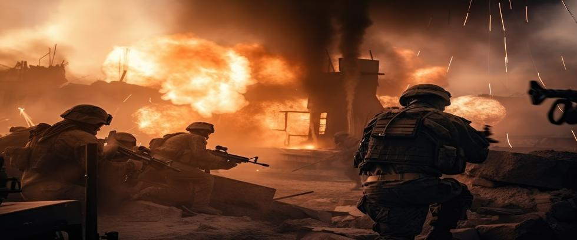

One of the deadliest nuclear rivalries in the world receives the least attention. For seven decades, India and Pakistan have fought bitter wars over unresolved issues from the past. Each country has a growing arsenal of nuclear weapons. Both display extreme hostility toward the other.
The issue is more than a border dispute. Their mutual animosity is a toxic combination of clashing religious and ethnic identities, lasting colonial legacies, and deep-rooted mistrust. The situation has reached a boiling point, but effectively addressing the future means first understanding the past.
Born from Blood in 1947
India and Pakistan were the same nation until 1947, when England granted freedom to its former colony. But there was a problem. India’s Hindu majority and its Muslim minority despised each other so much that they did not associate or intermarry. Muslims worshipped the one God of the Koran. Hindus worshipped what Muslims regarded as false idols. Hindus only drank Hindu water, while Muslims only drank Muslim water.
So great were their differences amid rising violence that separate nations were deemed the only solution. So England established the Hindu Republic of India in the east and the Muslim nation of Pakistan in the west. But the division was rushed and ill-planned. More than 10 million citizens were suddenly displaced in one of the largest migrations in history.
Over a million people died in sectarian violence on their journey to their new home. Families were torn apart, communities shattered, and mutual hate branded deep into national psyches. Pakistan emerged as not only a new country, but as a nation born out of battle with India.
Nowhere was the fracture more explosive than in the princely state of Jammu and Kashmir.
Kashmir: The Flashpoint That Won’t Stop Flashing
Before WWII, Jammu and Kashmir was a Muslim-majority region of India ruled by a Hindu Maharaja. When the Maharaja decided against his people’s will to join India instead of Pakistan, the first Indo-Pakistani war was started. An eventual ceasefire agreement again split the region, with the conflict still unresolved.
The wars in 1965 and 1999 also failed to bring closure, as did the clash in April 2025, when over fifty soldiers and civilians were killed.
Today, Kashmir is one of the most militarized zones on the planet. Indian troops patrol its valleys and borders with 24/7 vigilance. Pakistani-backed militants, often trained or sheltered by elements of Pakistan’s security establishment, infiltrate the region. Armed clashes, civilian deaths, and cross-border shelling continue.
If inaction is the match, Kashmir is the gasoline.
Nuclear Neighbors, Escalation Risks
India and Pakistan immediately transformed the security structure of South Asia when they tested nuclear weapons in 1998. Conventional warfare was suddenly transformed into conventional warfare with a twist – the possibility that any skirmish could potentially bring a nuclear response.
Subsequently, India established a “no first use” policy, but Pakistan did not. Pakistan allows the first use of nuclear weapons in response to conventional attacks it considers existential threats. Yet it should be noted that India’s doctrine makes an exception that does allow a nuclear response to chemical or biological attacks. Could terrorists start a nuclear war by attacking Indian cities that way?
The Global Stakes
This situation involves everyone on Earth. A nuclear conflict in South Asia would not stay in South Asia. Today, we know that even a modest nuclear exchange would generate a nuclear winter that would impact agriculture worldwide. This is no longer an abstract theory, but established science backed by major university studies involving modern computer climate models and observed natural phenomena. Every corner of our planet is at risk from an Indo-Pakistani nuclear war.
Yet media attention has been scant, with the rivalry often portrayed as a local squabble, rather than the international time-bomb it has become. It seems clear that any situation where nuclear-armed neighbors sporadically fight bitter wars driven by deep-seated hatred can only end tragically if allowed to continue.
A Policy Choice
The roots of war run deep, but the future is not yet written. At Our Planet Project Foundation, we believe that India and Pakistan both deserve peace, not violent borders and nuclear war drills.
Government policy largely determines whether India and Pakistan will fight a nuclear war, but people can change policy with sufficient organization and support. After all, we have to.